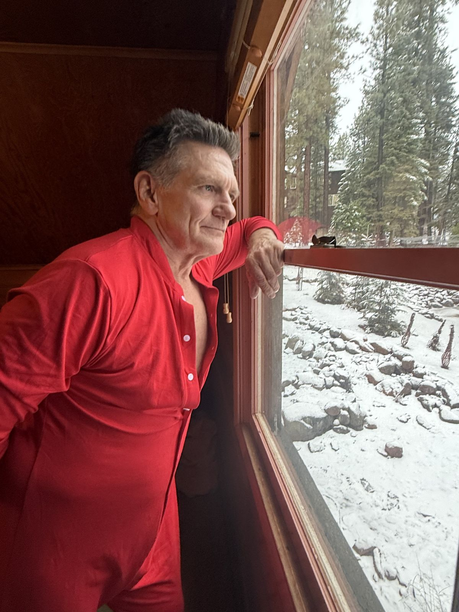

In loving memory
Artist, collector and friend. A lasting home for the work he made, the art he lived with, and the evening we gathered to remember him.

In memory
Kevin made art and lived surrounded by it. His home was full of the photographs, paintings and portraits he chose, hung beside the work of his own hands.
On November 22, the people who loved him gathered among that work to remember him. Each piece has since gone home with family and friends. This site keeps the whole collection together, in one place, for good.
Sunday · November 22 · 2026
Family and friends gathered in a gallery of dark walls and warm light, with Kevin’s portrait at the center of the room, his Night Garden along one wall and his collection hung all around. Candles were lit, the guest book filled, and a lifetime of photographs covered the memorial table.
By the end of the night, every piece had gone home with someone who loved him.
A film from the night
A few moments from the evening: the room filling with the people who knew him, and his work on every wall.
The evening in pictures
From his collection
Photographs, paintings, prints and portraits Kevin chose, bought and lived with — shown here alongside his own work.
Created by Kevin
Kevin’s textured screen prints: bold black botanicals on warm paper, each held in his brushed white halo and named for a day of the week, Lunes through Domingo. On November 22 they hung together, side by side, one last time.
Open any piece to see it closely and read the memories left with it. If you have a story about Kevin, or about something he loved, the family would be glad to hear it.